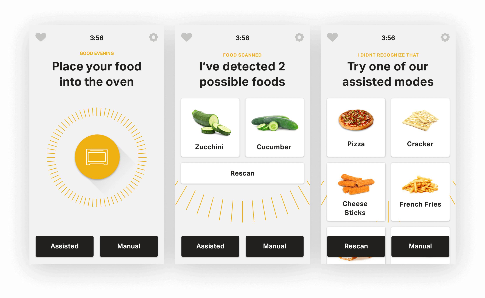
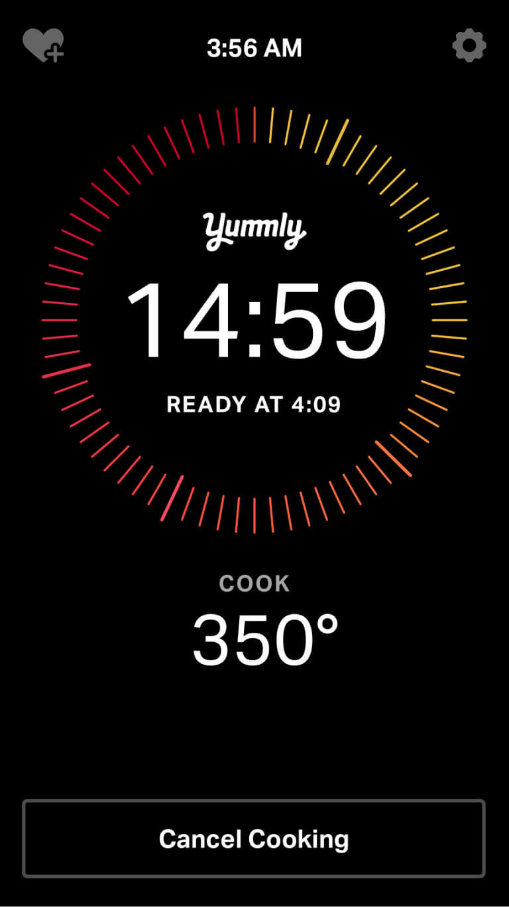
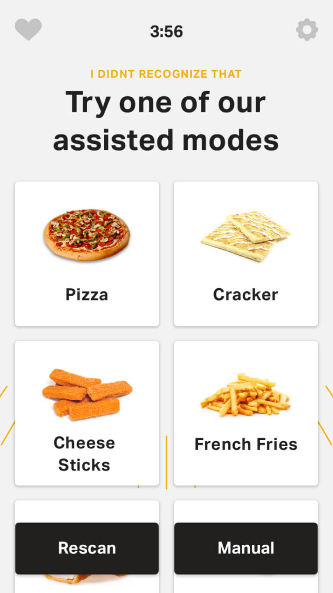
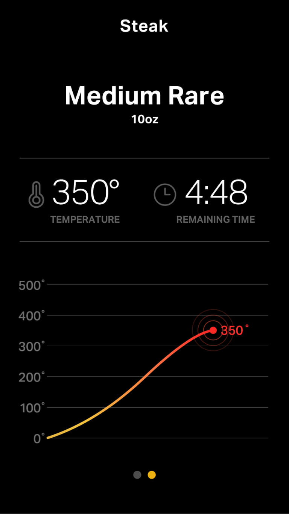
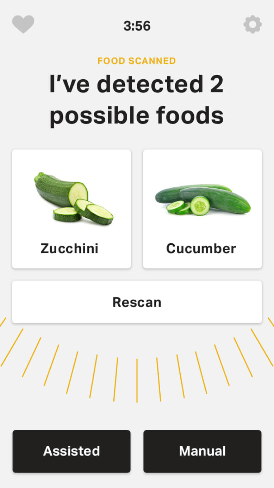
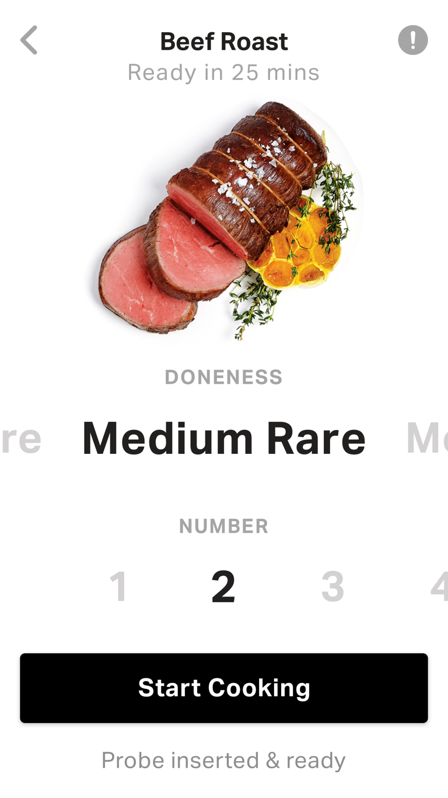
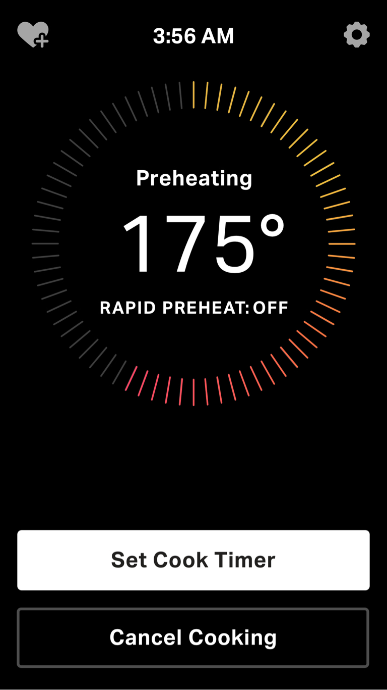
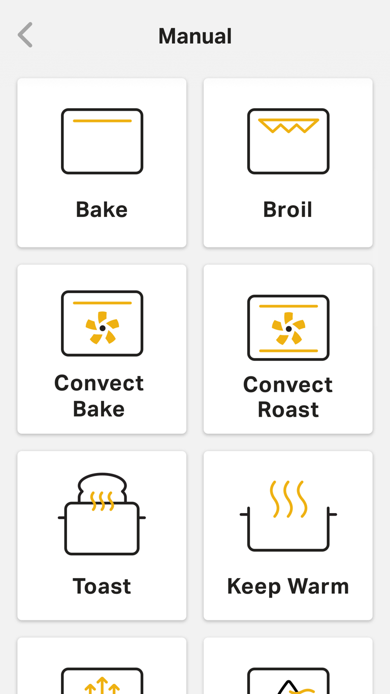
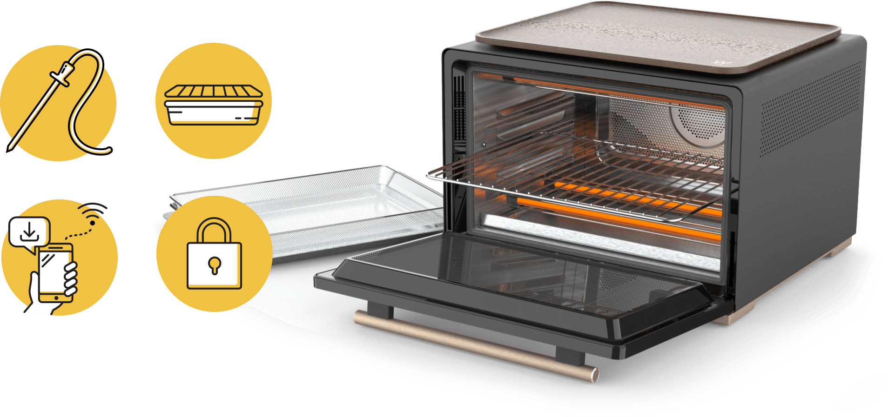

Services
- Strategy
- UX
- Visual Design
- Motion Design
Results
- CES Editors’ Choice Award
Creating a smart oven interface, pioneering the future of autonomous cooking.
The smart oven automatically detects what you have placed inside it and cooks it to perfection based on your preferences. Working closely with the Whirlpool team, we architected an experience that taught users to let the product do the work for them while also accounting for those that wanted to use the product in a traditional way.
A new way to interact
Rethinking common oven interactions and how user expectations have developed over years of use, we had to consider behavioral changes that break years of habit. With a smart oven that automatically recognizes the food you put into it, the consumer has to be taught to simply let the oven do the work they have been doing for decades.








